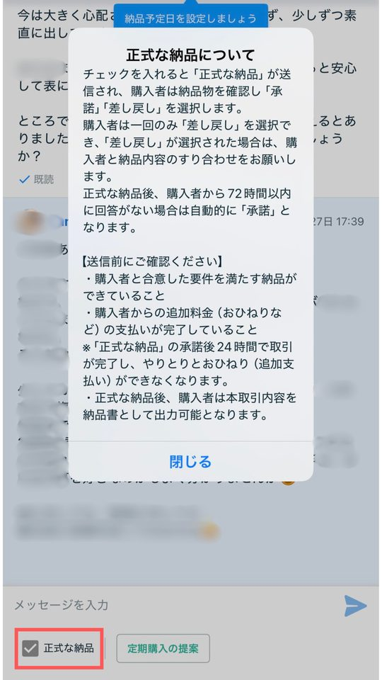
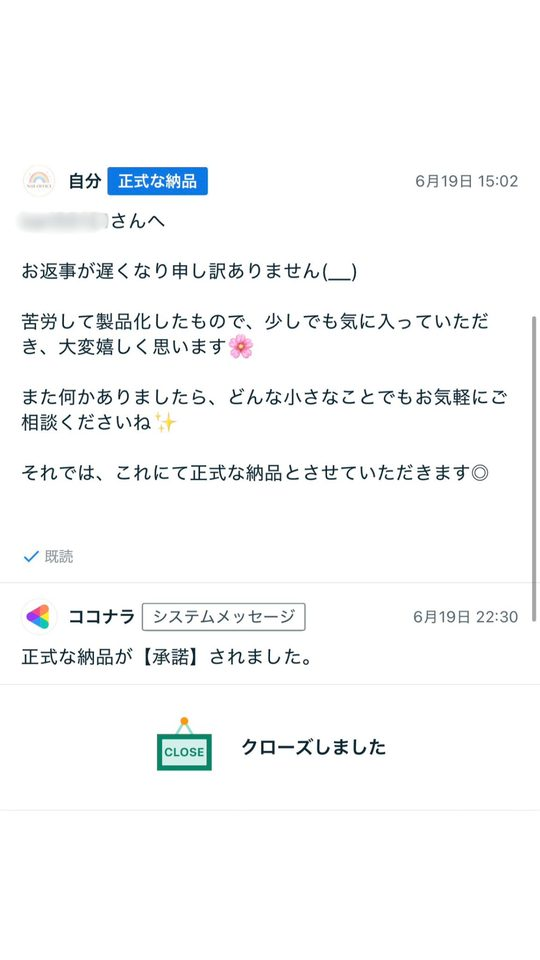
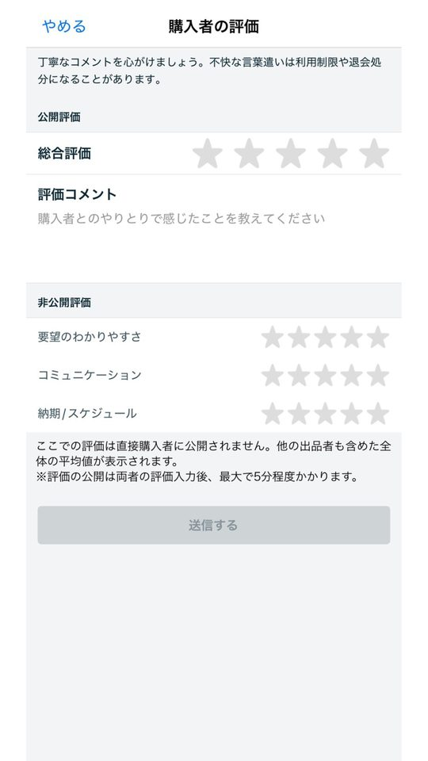
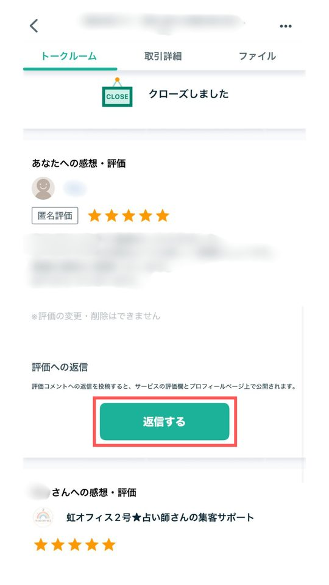
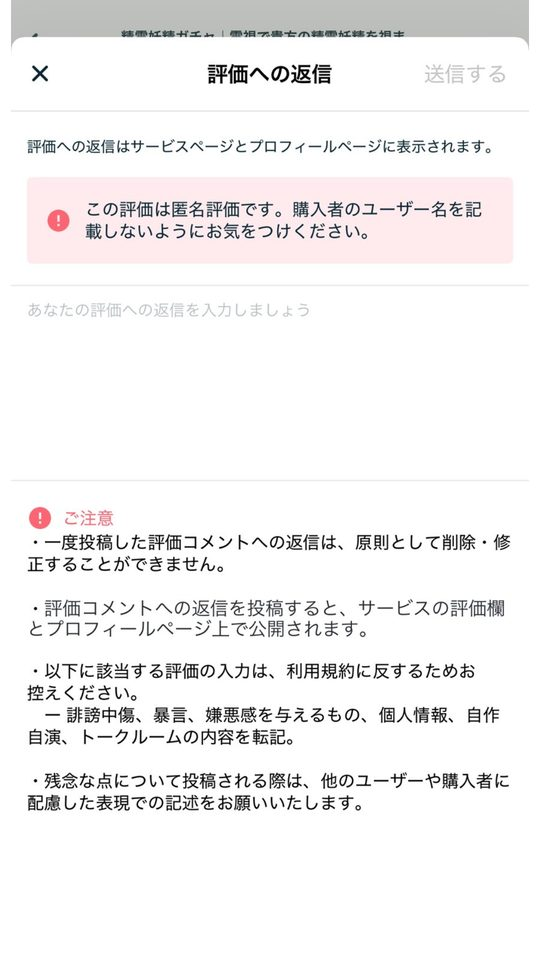

このステップのゴール
商品を公開して、最初の取引を購入から評価まで迷わず終えられるようにする。
このステップが大事な理由
購入されてからの対応が雑だと、せっかく来てくれたお客様を逃してしまいます。取引と評価の流れを正しく知っていれば、評価・リピート・ランクアップのすべてにつながります。
1
出品する
公式ガイド- マイページの「サービスを出品する」を押し、サービスの種類を選ぶ通常のサービス・電話相談・ビデオチャットの3つ。初めてなら、文章で鑑定結果を送る通常のサービスから始めるのがおすすめです
- カテゴリ「占い」とジャンルを選ぶ
- タイトル・キャッチコピー・サービス内容を入れるSTEP 4の出品原稿を貼り付け
- 価格とオプションを設定する入口・ミドル・バックは、それぞれ別の商品として出品します。追加の鑑定項目などは「オプション追加」から設定できます
- 画像を登録するSTEP 5で作った画像
- 公開する
2
購入されてから取引が終わるまで
公式ガイド購入されると、お客様とあなただけが見られる「トークルーム」が開きます。お話を聞くところから鑑定結果を届けるところまで、すべてトークルームの中で行います。
- 購入されるトークルームが開きます。通知か、マイページの「進行中の取引」から開けます。
- 返事を送るお礼と、お届けの予定を伝えます。足りない情報があればここで聞きます。
- 鑑定する鑑定に必要なことを確認して、鑑定します。ファイルを送るときは、1回100MBまでです。
- 「正式な納品」を送る鑑定結果を「正式な納品」として送ります。お客様と確認した内容をすべて満たしてから送りましょう。
- お客様が承諾するお客様が内容を確認して「承諾」すると、取引が完了に向かいます。
- 評価をつけ合うお客様はあなたを、あなたはお客様を評価します。
- 売上に反映トークルームが閉じると売上に反映されます（最大1日かかります）。あとは振込申請をするだけです。


覚えておきたい期限
- お客様が「承諾」すると、24時間後にトークルームが自動で閉じます。
- お客様が納品を「差し戻し」できるのは1回だけです。差し戻しのあと2回目の正式な納品を送ると、3日後にトークルームが自動で閉じます。
3
評価の仕組み
公式ガイド評価を入れる画面は1つですが、中身は「公開評価」と「非公開評価」の2種類に分かれています。
公開評価
総合評価（星1〜5）とコメント
- サービスページに表示され、誰でも見られる
- お互いが入力すると同時に公開される
- 入力できるのは10日間。片方だけ入力した場合は、期間のあとに入力した分だけ公開される
非公開評価
4つの項目とおすすめ度
- サービス内容・提案のわかりやすさ／コミュニケーション／クオリティ／納期・スケジュール
- 一人ひとりの点数は、出品者にも見えない
- 3件以上たまると、4項目の平均がサービスページに表示される
4つの項目のうち「わかりやすさ」「コミュニケーション」「納期」の3つは、鑑定の腕前とは関係なく、対応のていねいさで上げられます。最初のうちは、ここを確実に取りにいきましょう。



- 自分の評価は早めに入れる：あなたが入力しないと、お客様の評価の公開も遅れます。納品が終わったら、すぐに入力しましょう。
- 評価への返信でお礼を伝える：匿名の評価のときは、お客様のユーザー名を書かないように気をつけます。
- 評価がつかないこともある：お客様の評価は任意です。評価をしつこくお願いするのはやめましょう。
4
電話相談・ビデオチャット
公式ヘルプ通常のサービスに慣れてから始めれば大丈夫です。手元に残る金額が通常のサービスとは違うので、価格を決める前に確認しましょう。
通常のサービス 3,000円2,340円手数料22%
ビデオチャット 3,000円2,175円手数料27.5%
電話相談 1分100円1分41円手元に残るのは約4割
- 電話相談：1分ごとの料金で、「待機中」にしている間に相談を受けます。決めた時間が来ると、通話は自動で切れます。表の41円は手数料を引いたあとの金額で、ここからさらに引かれることはありません。
- 電話相談の通話料：ココナラアプリで通話すれば、出品者側の通話料はかかりません。自分の電話でかけると、携帯会社の通話料がかかります。
- ビデオチャット：Zoomアプリを使います。日時をトークルームで決めてから始めます。1回最大90分です。
消費税の課税事業者として登録している場合は、金額が少し変わります。出典：ココナラヘルプ「【電話】出品者の売上金と通話料について」・「販売時の手数料について」
5
うまくいくコツ
- 最初の返事はできるだけ早く：購入した直後のお客様は、ちゃんと届いたか不安です。鑑定はあとでも、お礼とお届け予定だけは先に送りましょう。
- 鑑定結果は「正式な納品」で送る：ふつうのメッセージで送っただけでは、取引は終わりません。
- お届け日より少し早く送る：予定より早く届くと、それだけで「納期」の評価が上がりやすくなります。
- やりとりはトークルームの中だけ：GoogleドライブやLINEなど、ココナラの外を使うのは禁止です（STEP 7）。
✓